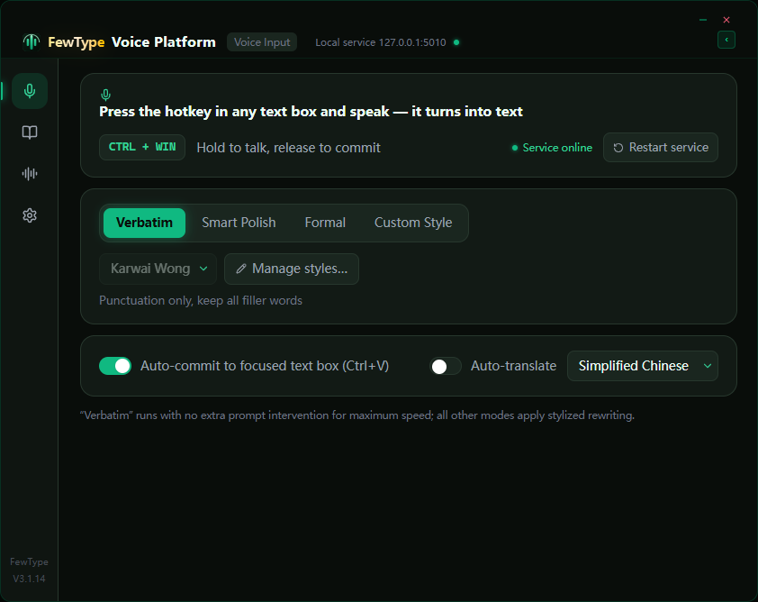
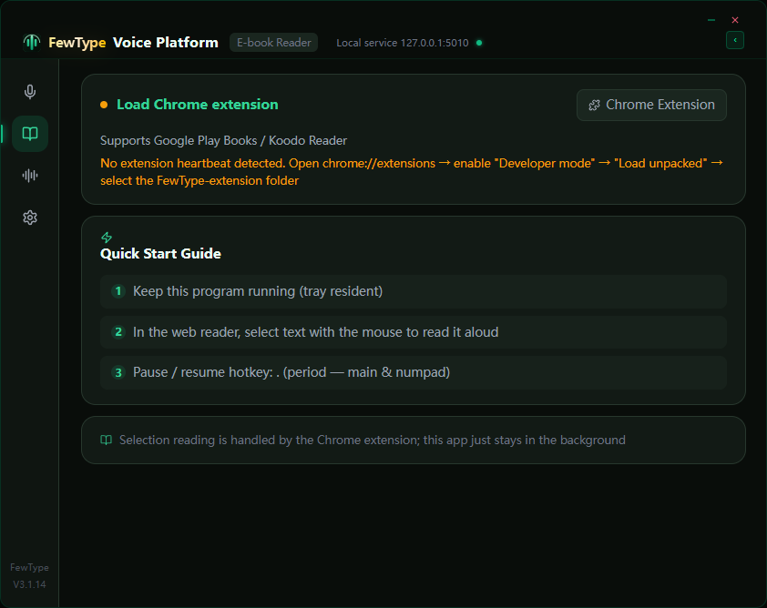
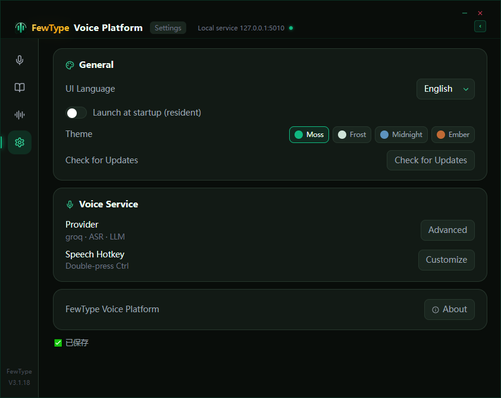

Press a global hotkey anywhere, speak, and FewType types for you — with optional AI translation and text polishing in 8 languages. The bundled browser extension also reads your ebooks aloud with auto voice matching.
Trigger from any app with a hotkey (Ctrl+Win or double-press Ctrl). Works in browsers, editors, chat windows, terminals — anywhere you can type. Auto-pastes with focus restoration.
Speak one language, output another. LLM translation and text polishing powered by Groq, Volcengine, DeepSeek or any OpenAI-compatible endpoint. Same-language dictation skips the LLM entirely.
Chrome/Edge extension reads ebooks in your browser aloud (Google Play Books, Koodo Reader, EPUB readers). Simplified/Traditional Chinese voices auto-match the book's script.
Your API keys stay in your local config. Logs record errors only — transcription text is never written to disk. No accounts, no telemetry.



Self-contained: bundles the VC runtime and auto-installs WebView2 when missing. Includes built-in auto-update.
Download Setup (.exe)Unzip and run. Includes the browser extension folder for ebook reading. WebView2 setup bundled.
Download Portable (.zip)All releases: github.com/Ray1979ANYWAY/FewType/releases · Free & open source (MIT). Unsigned build — Windows SmartScreen may warn on first run; click "More info → Run anyway".